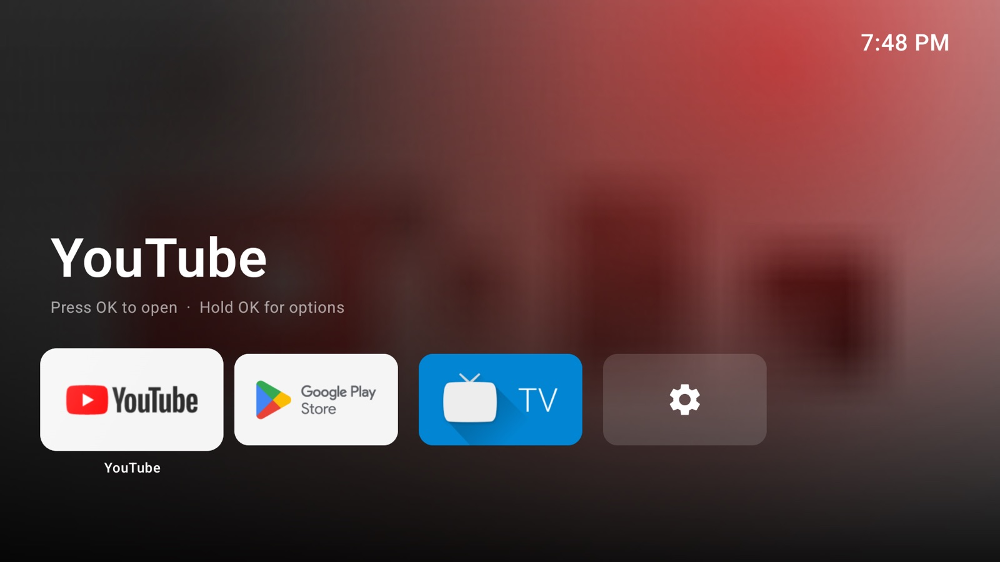
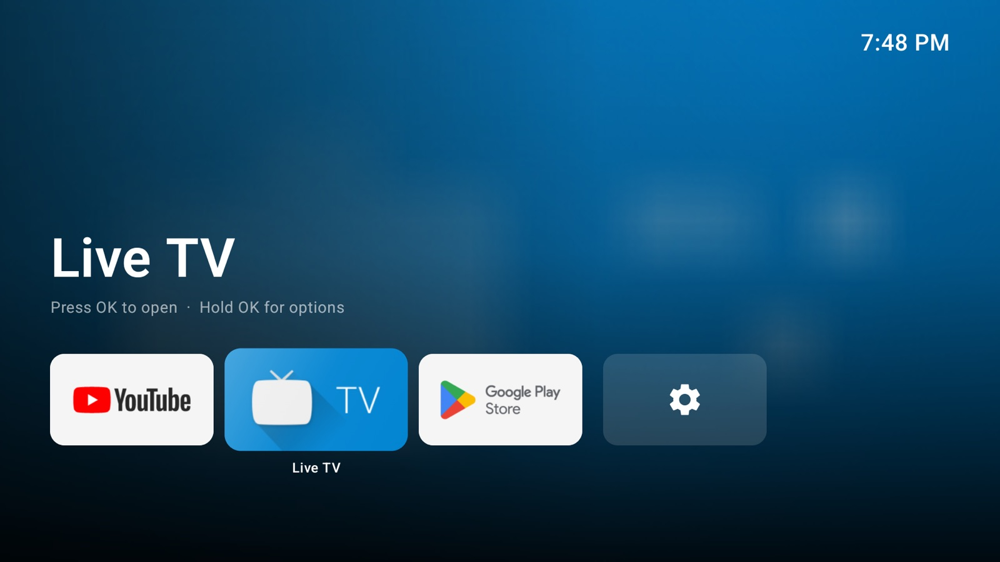
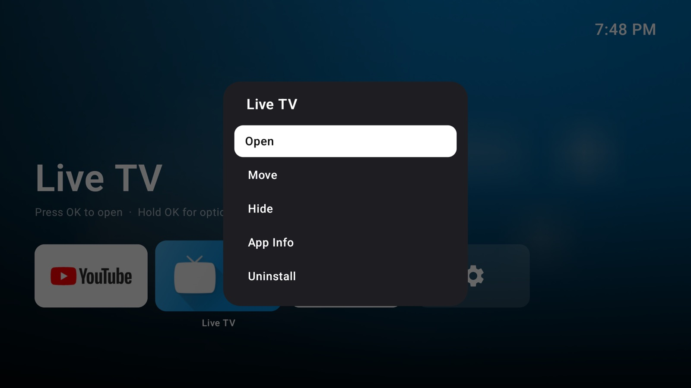
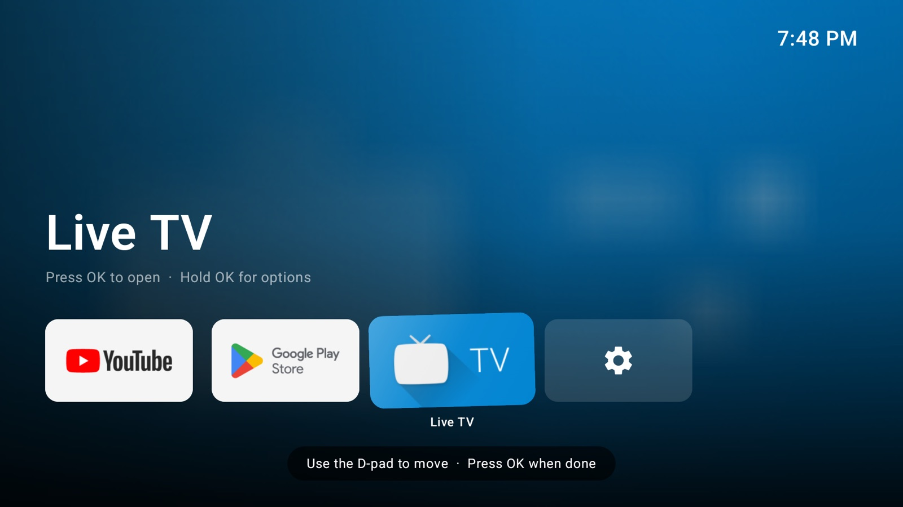

Your TV, beautifully calm.
An Apple TV–style home screen for Google TV. Just your apps, lit by their own colours. No ads, no clutter.


A Top Shelf that changes with you
Rest on an app and the whole screen takes on its colours, with its name front and centre. It feels just like Apple TV.

Hold OK for everything else
Open, move, hide, see app info or uninstall, all from one simple menu, right where you are.

Arrange it your way
Choose Move and the tile wiggles. Slide it anywhere with the D-pad, and put your favourites in the top row.
Everything you need. Nothing you don't.
Small touches that make switching on the TV a little nicer.
Smooth on a Chromecast. Nothing redraws while the screen is still.
Back or Home always takes you straight to the top.
Hide the apps you never open.
A clock and a friendly greeting, like a good hotel TV.
No ads, no sponsored rows, no recommendations.
Private by design. Shelf has no internet access at all.
Get Shelf on your TV
It takes about a minute. Works on Google TV and Android TV running Android 8 or newer.
- Install the free Downloader app from your TV's Play Store.
- Let Downloader install apps. Most TVs ask the first time; if not, see the tip below.
- Open Downloader and enter the code:
8063834
then choose Download Shelf on the page that opens. - Choose Install, then open Shelf from your apps. That's it.
Prefer typing? Enter shelf-tv.github.io/get in Downloader and it downloads straight away.
Tip: on Google TV and Android TV it's Settings → Apps → Security & restrictions → Unknown sources.
Make Shelf your Home screen
On the TV: go to Settings → System → Accessibility → Shelf Home Button and turn it on. Pressing Home now brings you to Shelf.
With a computer: for a full swap you can undo any time, run Shelf's install script with Wireless debugging turned on.
Questions
Everything you might want to know.
Which TVs does it work on?
Google TV and Android TV televisions, streaming sticks and boxes running Android 8 or newer. It's built and tested on a Chromecast with Google TV. Amazon Fire TV doesn't let another app take over the Home button, so it isn't supported.
Is it really free?
Yes. No subscription, no ads, no account to make.
Why does the Home button still open my TV's own menu?
If you control the streaming stick with your TV's own remote, the TV keeps the Home button for its own menus and never passes it on, so no app can change it. A remote paired with the stick itself (or the free Google TV app on your phone) will open Shelf.
Can I go back to the Google TV home screen?
Any time. Turn off the Shelf Home Button in Accessibility, or run restore.sh if you used the install script. Uninstalling Shelf changes nothing else on your TV.
How do I update it?
Enter the same code (8063834) in Downloader, choose Download Shelf, then Install. Your app order and hidden apps are kept.
What does Shelf know about me?
Nothing. Shelf has no internet permission, so it can't send anything anywhere. Your layout stays on your TV. Privacy note.